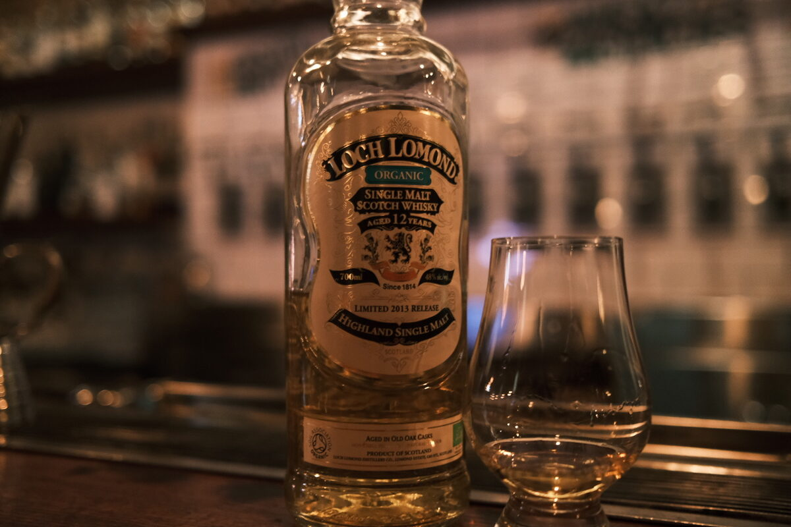

Loch Lomond "Organic" 12 years 48%
A limited edition from 2013 if the internet is to be believed. Organic. One for the terroir fans.
Colour Gold.
Nose Melons and malt. Classic Loch Lomond. Oddly artificial though. Waxy? Some chalk. Sugary sweetness. Unripe pears. Quite grassy. After water, more grass. I suppose grass grows when you water it?
Palate Super malty, pears and wax. Big melon again. Spicy, oak and cinnamon, some chilli. A little watery, some oil. After water, well… more watery…
Finish Caramel and spice. Cinnamon and vanilla. Melons. Quite hot and long. After water, ouch! Much hotter, unpleasant almost. What happened here (nb. perhaps a few too many espressos earlier in the day)? White chocolate…?
Comments Like the Loch Lomond character here. Not a huge fan of the texture or how it takes water. 79/100.

Posted by Dominic on 14 Jun 2021